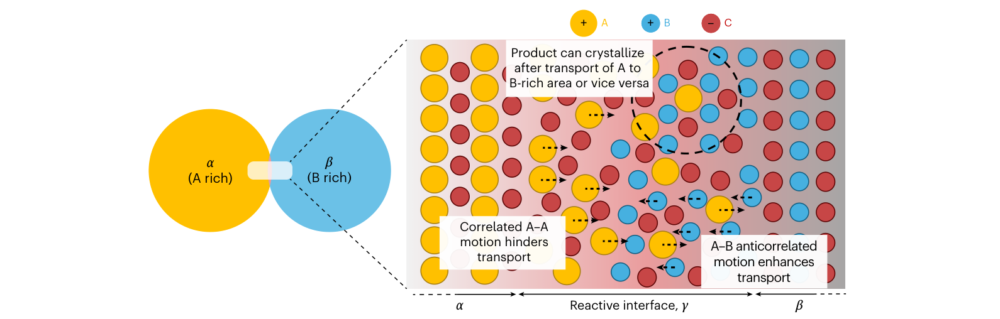
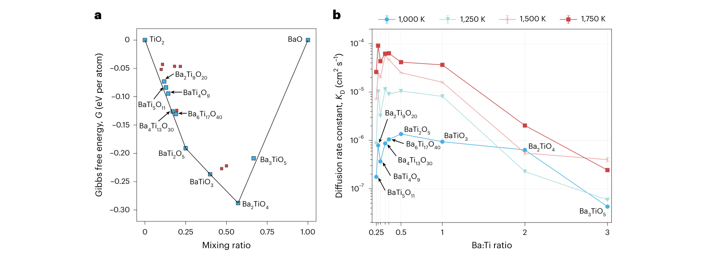
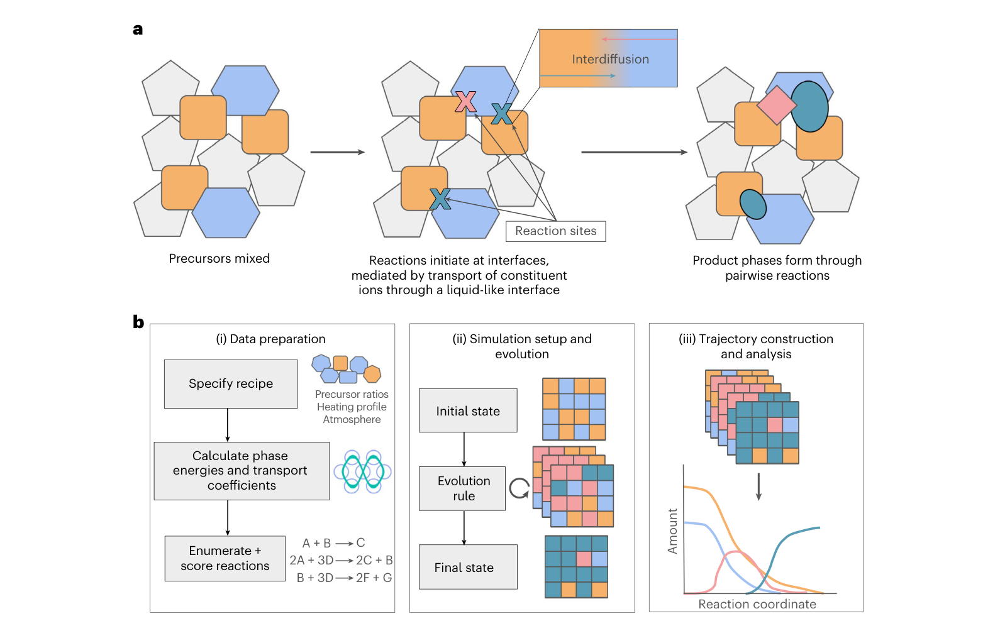
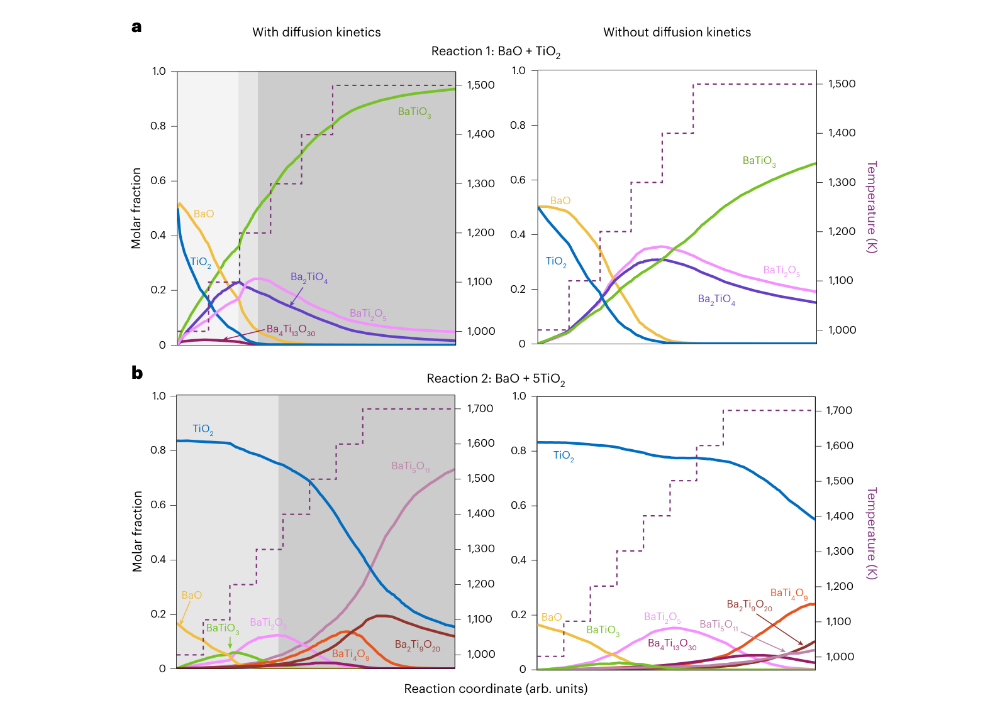
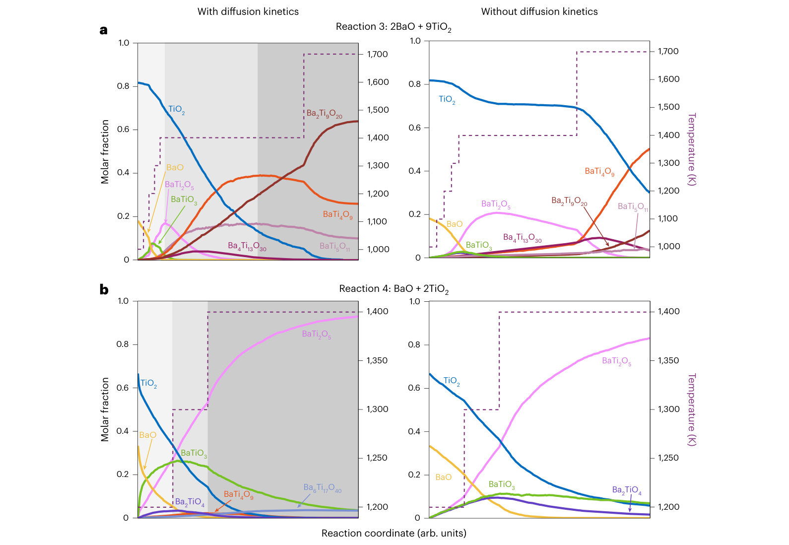
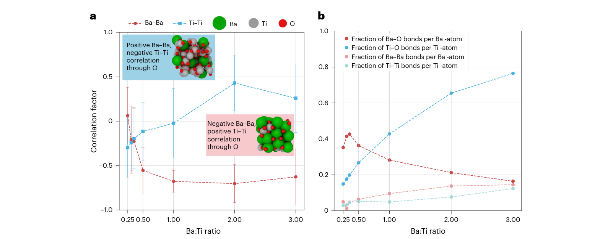

离子关联怎样改变固相合成路径：从类液态界面到粉末成相
论文原文 ↗Ion correlations explain kinetic selectivity in diffusion-limited solid-state synthesis reactions
Vir Karan、Max C. Gallant、Yuxing Fei、Gerbrand Ceder、Kristin A. Persson｜Nature Materials 25, 1385–1392（2026），2026年4月28日在线发表｜DOI｜
把 BaO 和 TiO₂ 粉末混合、加热，为什么会先出现 Ba₂TiO₄，随后出现 BaTi₂O₅，最后主要得到 BaTiO₃？如果改变投料比，为什么又能走向 Ba₂Ti₉O₂₀ 或 BaTi₂O₅？这些问题同时涉及哪种相形成有利、组成它的离子能否及时到达反应位置，以及已经形成的相会不会继续反应。
此前的反应网络和粉末反应模型，已能利用第一性原理能量枚举可能的反应。但是，在几个竞争相的形成驱动力相近时，热力学很难单独决定它们的出现顺序和数量。本文补进的关键环节，是用机器学习分子动力学计算反应界面的相关离子输运，再把它接入 ReactCA 粉末反应模型。作者在四组 BaO∶TiO₂ 配方中比较成相过程，说明输运与热力学的共同作用可以解释竞争相、中间相和最终相分布。
一、问题为什么落在粉末颗粒的接触界面
固相粉末反应从颗粒彼此接触的位置开始。BaO 一侧富 Ba，TiO₂ 一侧富 Ti；要长出三元钛酸钡，两侧必须交换物质。生成的产物层又把原来的前驱体隔开，后续原料需要继续穿过这层区域，才能供给正在生长的晶核。
作者提出的物理图像是：反应界面存在缺陷丰富、缺少晶体长程有序的类液态非晶层，晶核的生长受离子穿过该层的输运控制。建模时，每一种候选晶相都对应一个与它化学计量相同的非晶界面模型。这样，BaTiO₃、Ba₂TiO₄、BaTi₂O₅ 等候选，不仅有不同的形成自由能，也有不同的物质输运能力。
例如，生长 BaTiO₃ 需要按 Ba∶Ti＝1∶1 供应阳离子，生长 Ba₂TiO₄ 则需要 2∶1。即使后者的形成驱动力更强，对应界面若输运较慢，它的持续生长也会受到影响。本文正是把这种“形成有利”和“供应顺畅”的竞争变成可计算的量。

图1｜从颗粒接触到晶核生长（原文 Figure 1）。左侧是两种前驱体，右侧放大它们之间的无序反应区。不同离子通过界面迁移，改变局部可供成相的组成；离子之间的运动关联也参与决定有效输运。
局部反应的组成可以与整批粉末的投料比不同。例如，整体 Ba∶Ti＝1∶1，接触处仍可先长出富 Ba 的 Ba₂TiO₄；剩余较富 Ti 的物质随后继续参与反应。因而，要理解最终粉末，必须让局部反应及其后续转化连续发生。
二、方法怎样做：先给候选相准备热力学和输运信息
1．从 BaO–TiO₂ 的竞争相出发，建立有限温度热力学
作者研究 Ba–Ti–O 化学空间中的九种候选产物。模型以 BaO 和 TiO₂ 为前驱体；对文献中采用 BaCO₃ 的实验，则考虑其在形成三元产物之前分解得到 BaO 的过程。
热力学数据来自 Materials Project 的第一性原理形成能，并用机器学习估计振动对有限温度自由能的贡献。由此，在指定温度下，可以算出前驱体反应形成不同产物的自由能变化，并建立反应凸包。凸包的下包络表示各组成下自由能最低的相或相组合。
这个体系尤其适合检验动力学的作用：Ba₂TiO₄ 在 BaO/TiO₂ 界面上具有较强的形成驱动力，与 BaTiO₃、BaTi₂O₅ 的相关能量差约为 51 和 46 meV/atom。这些相之间的热力学竞争足够接近，离子输运的差异就有机会改变反应路径。

图2｜同一组候选的两种排序（原文 Figure 2）。a 从 TiO₂ 到 BaO 排列各组成的自由能，Ba₂TiO₄ 具有突出的热力学驱动力；b 按 Ba∶Ti 比排列有效扩散速率常数 K_D，纵轴为对数坐标。热力学上有利的组成与输运最快的组成并不重合，这正是后续成相竞争的来源。
2．初始“类液态结构”怎样生成：按每个候选的组成单独建原子盒
这里首先需要区分两种输入：投料配方决定粉末里最初有什么，候选产物的组成决定要计算哪些界面输运参数。
以 BaTiO₃ 为例，作者用 Packmol 按 Ba∶Ti∶O＝1∶1∶3 随机放置原子，生成一个无序的周期性原子盒。对于 Ba₂TiO₄，另建 2∶1∶4 的盒子；对于 BaTi₂O₅，另建 1∶2∶5 的盒子。各组成分别进行分子动力学，让原子在相应环境中相互作用和重排。
**这些盒子为不同候选组成提供输运性质，随后作为参数用于粉末反应。**原子盒中的坐标由随机堆装和平衡过程生成；候选晶相在这里提供的是目标化学计量。
初始随机结构还需要找到适合模拟温度的体积。作者采用 MPMorph 工作流：在初始体积的 0.8 倍和 1.2 倍分别进行短时间、定体积定温的第一性原理分子动力学，估计状态方程，再选择新的试验体积计算。如果尚未收敛，就继续调整；达到收敛后，再运行 20 ps 的轨迹，使结构在该体积下平衡。这一步让任意的初始堆装进入可以采样高温无序环境的状态。
3．机器学习势怎样得到，又怎样用于更长的输运模拟
第一性原理分子动力学每一步都要计算电子结构，可以提供高质量能量与原子力，却难以承担所有组成在纳秒尺度上的重复模拟。作者因此训练 ACE 原子间势：用局部原子环境的数学展开表示相互作用，从第一性原理数据学习能量和力，再用它快速推进原子轨迹。
训练从 BaTiO₃、Ba₂TiO₄、BaTi₂O₅ 和 BaTi₅O₁₁ 四种组成在 1,000、1,250、1,500 K 的第一性原理轨迹出发，并加入 Materials Project 数据。随后，作者让初步训练的势在更多候选组成上运行高温模拟，根据“外推等级”挑出与已有训练环境差异较大的结构，再计算这些结构的第一性原理能量和力，加入训练集重新拟合。这种运行模型 → 找到陌生环境 → 补算标签 → 更新模型的主动学习循环进行了四轮，最终训练集包含 4,628 个结构。
势训练完成后，研究进入输运计算阶段：对各候选组成，在 750、1,000、1,250、1,500、1,750 K 分别运行 5 ns 的分子动力学；每种组成和温度使用五条重复轨迹。训练所学的是原子相互作用，轨迹统计给出的才是后续需要的离子输运参数。
4．为什么要计算“运动关联”，而不只计算单个离子走了多远
常见的自扩散系数，从单个原子的均方位移求得，回答“这一类原子平均移动得有多快”。但反应层是密集的多组分体系，一个离子的移动会与周围其他离子的运动联系起来。要知道某种化学势差最终驱动多少净物质输运，就要把这些联系一起统计。
作者采用 Onsager 输运矩阵，将通量写成：
\[ J_i=-\sum_j L_{ij}\nabla\mu_j . \]
这里，\(J_i\) 是第 \(i\) 类离子的通量；\(\nabla\mu_j\) 是第 \(j\) 类离子的化学势梯度，表示把它从一侧移向另一侧的驱动力；\(L_{ij}\) 描述这个驱动力对第 \(i\) 类离子通量的作用。本文涉及 Ba²⁺、Ti⁴⁺和 O²⁻。
矩阵由平衡分子动力学中的位移关联求得，可以分三层理解：
- 自身项：每个离子自己的位移平方，对应通常的自扩散信息。
- 同种不同离子的关联项：例如一个 Ba 离子移动时，其他 Ba 离子的位移是否与它同向或反向相关。这部分会增强或抵消 Ba 的集体位移。
- 不同种离子的交叉项：例如 Ba 与 Ti 的位移关联，使 Ti 的驱动力也能参与决定 Ba 的通量。
实际计算会把所有相关位移加总，再取长时间扩散区间的变化率。因此，“每个原子都在动”和“能向反应位置供应多少净物质”，在这里通过不同的统计量表达。这也是题名中 **ion correlations（离子关联）**的含义。
5．怎样从原子轨迹得到某一条反应的有效扩散参数
对于一条局部反应 \(\alpha+\beta\rightarrow\gamma\)，作者已经有候选产物 \(\gamma\) 的输运矩阵。还需要知道，两种反应物 \(\alpha\)、\(\beta\) 能提供多大的驱动力。
作者利用第一性原理热力学数据构建化学势图，从两种反应物所对应区域之间的最短分离估计各物种的化学势差，再除以产物层厚度，近似得到穿过该层的化学势梯度。随后，将候选组成的输运矩阵、反应物的化学势差，以及产物的组成和摩尔体积结合，得到有效扩散速率常数 \(K_D\)。
计算时，输运矩阵的各项先与相应化学势差相乘，再按产物中的物种比例和摩尔体积换算、汇总。因此，\(K_D\) 同时包含“这种无序组成中的离子怎样移动”和“这对反应物提供怎样的驱动力”。它把原子轨迹转成了可供粉末反应模型调用的动力学信息。
为连接到颗粒反应，作者采用核–壳生长模型：反应物颗粒逐渐被产物层覆盖，原料需要穿过越来越厚的产物层，扩散限制的生长随之减慢。反应完成程度 \(y\) 与时间的关系写成：
\[ 1-(1-y)^{1/3}=\frac{\sqrt{2K_Dt}}{r_0} . \]
其中 \(r_0\) 是前驱体颗粒的初始半径，本文统一设为 0.1 μm。这条关系把扩散参数和颗粒尺度接起来：输运越快，反应推进越快；颗粒越大，需要跨越的物质输运距离越长。
三、ReactCA 怎样把这些参数变成粉末成相路径
原子模拟准备好的是一组“不同组成、不同温度下的输运性质”。接下来，ReactCA 在更大的粉末尺度上调用这些数据。

图3｜两种尺度怎样接起来（原文 Figure 3）。a 示意颗粒接触、界面输运和产物生成；b 从配方、能量及输运数据出发，枚举并评分反应，再在粉末网格上反复更新，最终得到各相含量随反应推进的变化。
先输入前驱体名称、投料比例、气氛和升温程序。程序建立三维网格，每个格子表示一个粉末颗粒，并保存它当前属于哪种相。初态按照前驱体配比随机分布：对于 BaO＋TiO₂ 配方，格子最初标为 BaO 或 TiO₂；改变投料比，就改变两类前驱体在初态中的比例。
两套初始化的分工可以概括为：
| 初始化对象 | 按什么决定组成 | 初始表示 | 产生什么输出 |
|---|---|---|---|
| 类液态界面的原子模拟 | 每一种候选产物的化学计量 | 随机原子坐标，经体积平衡得到的无序结构 | 输运矩阵，以及与反应物驱动力结合得到的 K_D |
| ReactCA 的粉末模拟 | 前驱体种类及投料配比 | 随机分布的前驱体相标签 | 中间相、产物的出现顺序及含量变化 |
例如，整体 BaO∶TiO₂＝1∶1 时，粉末初态由这两种前驱体构成。Ba₂TiO₄、BaTi₂O₅、BaTiO₃ 等候选存在于可选反应集合中，随着局部反应发生才逐步成为网格中的相。
模拟反复选择局部反应物，从当前可以发生的反应中按分数抽取一条，再按化学计量以概率方式消耗反应物、生成产物。新出现的相又与邻近相继续反应，因此中间相能够先增加、后减少。大量局部更新连起来，就得到整批粉末的相分数轨迹。
本文对原有 ReactCA 的主要修改，是让反应分数同时包含三类信息：形成自由能、有效扩散参数 K_D，以及相对于反应物熔点的温度。最后一项沿用 Tammann 规则的经验图像，即达到熔点的一定比例后，固体反应更容易推进；加入 K_D 后，不同候选产物的实际输运差异也进入竞争。
图4、图5的横轴采用反应推进坐标，紫色虚线给出施加的温度程序，纵轴是各相的摩尔分数。升温段与保温段中的相分数变化，共同呈现作者与文献合成过程比较的内容。
四、主要结果：加入输运后，中间相和最终相分布怎样变化
1．1∶1 配方：从富 Ba 中间相走向接近单相 BaTiO₃
第一组是 BaO∶TiO₂＝1∶1，升温至 1,500 K 后保温。加入输运的模拟中，低温首先生成 Ba₂TiO₄ 和 BaTiO₃；继续升温，Ba₂TiO₄ 被消耗，BaTi₂O₅ 成为较主要的杂相；进一步反应后，BaTi₂O₅ 也大部分转化，最终以接近单相的 BaTiO₃ 为主。
这个先后关系与已有实验吻合：低温 1,000–1,050 K 的主要杂相是 Ba₂TiO₄；约 1,200 K 后，BaTi₂O₅ 的影响更加突出；延长反应能够显著提高 BaTiO₃ 的纯度。
对照模拟保留热力学和 Tammann 温度项，去掉 K_D。它最终仍生成最多的 BaTiO₃，但其摩尔分数约为 70%，同时保留明显的 Ba₂TiO₄ 和 BaTi₂O₅。图4a左侧的完整模型则走向接近单相的终态，也更清楚地分开两种主要杂相的出现和消耗阶段。

图4｜输运如何改变产物和中间相（原文 Figure 4）。左右分别为加入和不加入扩散动力学，上排为 1∶1 配方，下排为 1∶5 配方。a 重点看紫色 Ba₂TiO₄、粉色 BaTi₂O₅ 的先后变化，以及绿色 BaTiO₃ 的最终比例；b 则显示富 Ti 配方下，输运会显著改变 BaTi₅O₁₁、Ba₂Ti₉O₂₀、BaTi₄O₉ 和剩余 TiO₂ 的分配。
在更富 Ti 的 1∶5 配方中，BaTiO₃ 和 BaTi₂O₅ 先少量生成，随后转向 BaTi₅O₁₁、Ba₂Ti₉O₂₀ 等富 Ti 相，BaTi₄O₉ 也经历中间阶段。随升温与反应推进，某些中间相被继续消耗。这说明改变整体投料比后，同一套局部反应和输运数据能够组织出另一条成相路径。
2．2∶9 与 1∶2 配方：快生成的相和最终积累的相可以不同
BaO∶TiO₂＝2∶9 对应 Ba₂Ti₉O₂₀ 的总计量。作者沿用文献中的分段加热程序，在约 1,400 K 保温，随后升至约 1,700 K。实验观察到的早期形成速率顺序是：
BaTi₅O₁₁ ＞ BaTi₄O₉ ＞ Ba₂Ti₉O₂₀。
完整模型再现了这一趋势。BaTi₅O₁₁ 和 BaTi₄O₉ 先较快出现，随后生长趋缓，并在更高温度下减少；Ba₂Ti₉O₂₀ 则持续增长，最终成为主要产物。这里，局部初期长得快的相，能够成为后续反应的原料。

图5｜配方和温度程序共同组织反应路径（原文 Figure 5）。a 为 2∶9 配方，左图中先出现的富 Ti 中间相随后让位于 Ba₂Ti₉O₂₀；b 为 1∶2 配方，左图中绿色 BaTiO₃ 的明显中间峰逐渐被粉色 BaTi₂O₅ 取代。右列为去掉扩散信息的对应模拟。
BaO∶TiO₂＝1∶2 则对应 BaTi₂O₅。作者模拟约 1,200、1,300、1,400 K 三段退火：第一段以 BaTiO₃ 为主要生成相，第二段 BaTi₂O₅ 超过它，第三段接近单相 BaTi₂O₅，并伴有少量 BaTiO₃ 和 Ba₆Ti₁₇O₄₀。这与文献报告的逐段成相过程一致。
四组配方共同说明，动力学信息带来的收益集中在谁先形成、谁继续转化、杂相保留多少。这些过程决定实验中实际得到的粉末，而它们又会随配比和温度程序改变。
3．为什么候选组成的输运差异这么大：离子关联把局部结构接到成相选择
图2b中，1,000 K 以上，富 Ti 组成的 K_D 比富 Ba 组成高出一个数量级以上。随温度升高，许多富 Ti 组成的 K_D 每升高 250 K 就提高约一个数量级，而富 Ba 组成在升高约 750 K 后，增加幅度仍只有约一个数量级。因而，在相同温度下，候选相对应界面的供料能力差别很大。
作者进一步分析 1,500 K 时的运动关联和局部配位。图6a采用关联因子
\[ f_i=\frac{L_{ii}^{\mathrm{distinct}}}{L_{ii}^{\mathrm{self}}} \]
表示同种不同离子的关联贡献相对于自身贡献的大小。接近零表示这一附加关联较弱，负值表示它抵消部分集体输运，正值表示它增强集体输运。

图6｜组成怎样改变集体运动（原文 Figure 6）。a 的红线为 Ba–Ba 关联，蓝线为 Ti–Ti 关联；在富 Ba 侧，Ba–Ba 出现明显负关联，而 Ti–Ti 转为正关联。b 展示局部配位比例的变化：随 Ba∶Ti 增加，Ti–O、Ba–Ba 等环境同时重排。两图把组成、局部结构与输运差异联系起来。
随着 Ba 含量增加，Ti 周围的 O 配位及 TiOₓ 局部单元发生变化，Ba–Ba 近邻关系也增加。富 Ba 界面中，Ba 离子的负关联明显，集体 Ba 输运相对于自扩散受到削弱；Ti 离子则表现出较弱的正关联。局部结构与运动关联由此共同影响 K_D，使其在中间 Ba∶Ti 比附近较高、在富 Ba 侧明显降低。
作者还把完整输运与“只保留自扩散项”的结果比较。自扩散能解释大部分动力学趋势，加入离子关联后，相对成相数量和一些中间相的预测进一步改善。例如，在 1∶1 配方中，完整模型能够生成实验报告的 Ba₄Ti₁₃O₃₀ 中间相；在 2∶9 配方中，加入关联项后，初期富 Ba 中间相减少，最终相分配也更接近实验。这使“离子关联”从轨迹中的统计特征，变成了会影响合成判断的信息。
五、这项工作建立了什么认识，后作又延伸了哪里
作者根据不同温度下输运与热力学的相对作用，将 Ba–Ti–O 中的选择性分为三个区间：
| 温度区间 | 主导图像 | 对成相的影响 |
|---|---|---|
| 约低于 1,100 K | 各组成输运普遍缓慢，反应启动受抑制 | 投料组成与较强形成驱动力影响最初出现的相 |
| 约 1,100–1,700 K | 候选组成间的输运差异突出 | 动力学在热力学接近的竞争相中显著改变生长和积累 |
| 约高于 1,700 K | 各组成输运加快，速率差异的相对作用减弱 | 相组合逐渐靠近给定总体组成下的热力学平衡 |
这套框架新增的能力，是把候选晶相的热力学、相应无序界面的原子运动，以及粉末接触处的局部反应接在一起。第一性原理数据给出形成驱动力，机器学习势使长时间输运采样可行，Onsager 分析保留离子之间的关联，ReactCA 则把这些量放进会不断产生、消耗中间相的粉末反应过程。配方和温度程序由此可以在同一框架中比较。
后续的混合价态工作沿用了这里的核心路线，再处理 Fe²⁺/Fe³⁺能够相互转化的情形。
| 方法环节 | 本文：Ba–Ti–O 前作 | 后作：Ba–Fe–O、Y–Fe–O |
|---|---|---|
| 主要问题 | 相关离子输运如何改变竞争相的形成和消耗 | 氧化还原怎样与相关输运耦合，并改变成相路径 |
| 价态处理 | Ba²⁺、Ti⁴⁺、O²⁻为固定价态 | 跟踪 Fe²⁺/Fe³⁺随局部环境发生的价态变化 |
| 原子模拟 | 用第一性原理数据训练 ACE 势，统计无序组成中的输运 | 微调 CHGNet，并采用蒸馏得到的 GrACE 势推进长轨迹；通过局域磁矩和电中性约束分配铁价态 |
| 共同主干 | 候选组成的类液态界面 → 输运矩阵 → K_D → ReactCA 相演化 | 沿用并扩展这条主干，使其进入混合价态氧化物 |
前作建立了从候选组成的非晶界面及其集体输运，到粉末成相选择概率的连接；后作进一步将氧化还原和价态分辨输运纳入其中，使同一物理图像能够处理混合价态氧化物。
相关原始资料：ReactCA 方法论文预印本；rxn-ca 代码；输运数据与分析资料；后作 PDF。
附：原始摘要完整中文翻译
为新型无机材料确立可行的固相合成路径，仍然是材料科学面临的一项重大挑战。此前基于成对反应的路径设计方法，利用第一性原理数据探索热力学景观，但缺少动力学信息，限制了其有效性。这一缺口导致前驱体选择和预测不够理想，尤其是在形成能相近的竞争相参与反应时，离子扩散会产生关键影响。
在此，我们展示了一种无机合成框架，将机器学习得到的、穿过“类液态”产物层的输运性质，纳入热力学元胞反应模型。在以竞争性多形性著称的 Ba–Ti–O 体系中，我们针对不同 BaO∶TiO₂ 比例，准确预测了相形成随时间和温度的变化。我们发现，扩散与热力学的相互作用支配相组成，而离子间交叉输运系数对于预测扩散限制的选择性至关重要。这项工作通过整合固相反应动力学、第一性原理热力学和空间反应性，连接了不同的长度尺度和时间尺度。